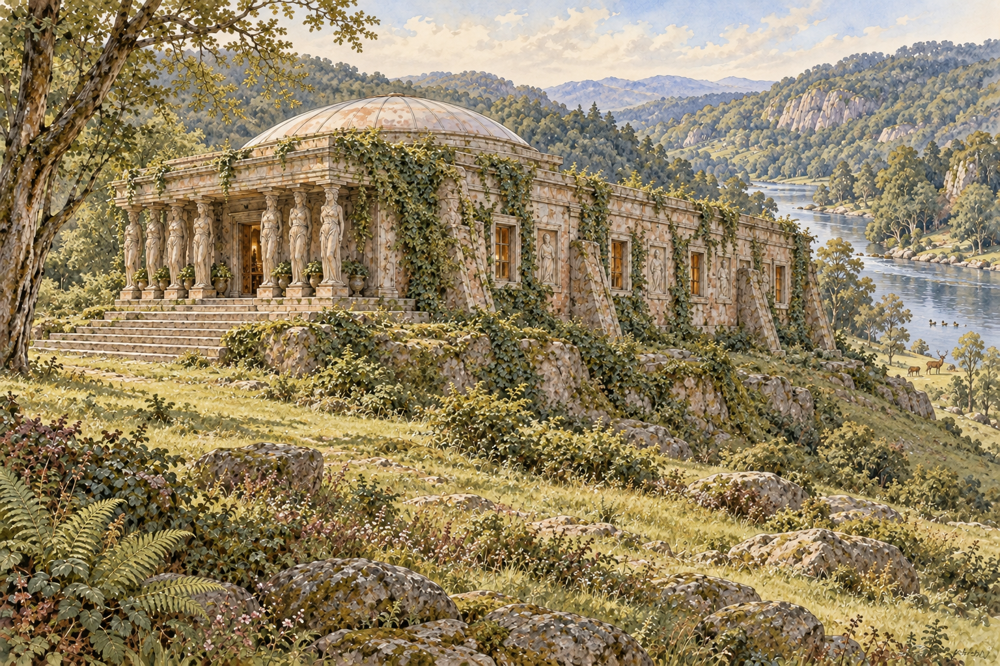

屋外の、生きた花
丘や谷を彩る花は、光、季節、雨に応答する生きた環境です。スミスが花を摘んでよいかためらうのも、こちらの自然との関係です。
第14章の花へ →家と周囲の景観をイラストで、室内のつながりを推定間取り図で読む。
実在地の地図や正確な復元図ではありません。屋外のイラストは本文の描写に基づく創作イメージ、室内は曖昧な部分を補った配置案です。関連する場面はリンクから本文へ移動できます。

庭・芝生地・生垣を整えた邸宅とは違い、家のすぐ周囲も野生的な景観として描かれます（第2・4章）。川は家の背後にあり、裏側のテラスからおよそ200ヤード以内。森へ働きに行き、丘へ馬を走らせるのは第14章の場面です。
移動の模式図を、部屋と戸の配置として描き直した案です。破線の壁は「この形が本文に描かれている」という意味ではありません。
狭い画面では拡大すると図の枠内を上下・左右に動かせます。ページ本文は通常の縦スクロールです。
入口と広間：正面入口の向かいに、葉を象った扉と、その背後の絵窓があります。これは裏庭への出口ではありません。暖炉とアーチ状の出入口が対向することは明記されていますが、図では左右を仮置きしました。
音楽室と回廊：広間から通路を経て音楽室へ、音楽室から長い彫像の回廊へ入る接続は本文にあります。ただし部屋同士の角度や幅は分かりません。音楽室の戸は第20章で「南向き」とされますが、それに合わせて家全体の方角を復元したわけではありません。
就寝区画：背面テラスに沿う小部屋の列、各室の通路側とテラス側の戸、二つの通路が直角に交わることを採用しました。どの主要室につながるか、部屋の総数は不明です。テラス側の戸は閉じられます（第8章）。常時開放の部屋と決めつけません。
母の部屋と寝室：窓に山景を描いた明るい〈母の部屋〉と、病のチャステルが寝ている部屋は別です（第18章）。図では、母の特別な地位と看病の動線から、一般の就寝室とは別の〈母の居住区画〉を推定しています。ただし、一般就寝室の列との位置関係は未確定で、その列の一室である可能性を本文が排除しているわけではありません。共通壁や直接の扉も確認できません。
専用区画を推定する理由：第20章では、新しい母が〈母の部屋〉へ導かれて生涯そこに住み、家の奉仕を免れ、皆から奉仕と尊敬を受けると説明されます。母は一般成員と同じ待遇ではなく、役職に伴う住まいを持つ人物です。また第18章では、ウィリアムが〈母の部屋〉で待機して寝室を訪れ、父も寝室から来て、後には隣室へ休みに行きます。この社会制度と生活・看護の動線を合わせ、複数の部屋からなるまとまった区画を想定しました。近代の裕福な家の主寝室をそのまま当てはめたものではなく、作品内の役割に基づく推定です。
階数と段差：外観は「一階建て」（第2章）とされる一方、母の部屋の手前では回廊の床から20〜30フィート（約6〜9m）上がります（第12章）。地形や基壇による高低差か、特殊な建物構成かは確定できません。図では独立した二階を補わず、「回廊より高い床」と注記しました。
未描画の部分：台所、作業場、倉庫などを想像で埋めてはいません。外形・壁厚・部屋の面積比も復元ではなく、読書のための整理です。
it was a dwelling-place, and had but one floora great door stood facing the one by which we had entered.it had a stone and bronze fireplace some twenty or thirty feet long on one side, and several tall arched doorways on the other.Returning by the hall we went through a passage and entered a room of vast extentalong an obscure passage; then, at right angles with the first, a second broader, lighter passagewere placed side by side in a row opening on the terrace at the back of the house.by simply pulling out a sliding panel.Leaving the music-room, we entered another apartment, of the same nave-like form, but vaster, or, at all events, considerably longer.came to a landing twenty or thirty feet above the level of the floor we had traversed.Here Yoletta pushed a glass door aside and ushered me into another apartment — the Mother's Room.the windows, eight in number, formed the principal attraction.I rose, and for the first time entered that sacred chamber, where Chastel was lying on a low bedWhen we were again in the Mother's Room she threw her arms about my neckthe father rose to seek a little needful rest in an adjoining room.the sun shining brightly in at the doors opening to the south.they shall lead her to the Mother's Room, thereafter to be inhabited by her as long as life lasts.And she shall no longer serve in the house or suffer rebuke; but all shall serve her in love, and hold her in reverence丘や谷を彩る花は、光、季節、雨に応答する生きた環境です。スミスが花を摘んでよいかためらうのも、こちらの自然との関係です。
第14章の花へ →金属の葉、ガラスに描かれた百合、母の部屋の山景は、自然を表す制作物です。自然語と建造語が共在しても、生きた植物が建物に入り込んだとは限りません。
第3章の窓へ →第5章で語られる〈コラダインの家〉は別の家です。海や崖をこの家の周辺景観へ合成していません。
the house had been raised on the natural foundation of one of these rocks standing a little above the river that flowed behind it.There were no gardens, lawns, enclosures or hedges near it, nor cultivation of any kind.supported by sixteen huge caryatides, standing on round massive pedestals.On the central portion of the building rested a great dome-shaped roofWE ascended the steps, and passing through the portico went into the hallWe were now on the opposite side of the house and looked upon the river, which was not more than a couple of hundred yards from the terrace or platform on which it stood.Returning by the hall we went through a passage and entered a room of vast extentLeaving the music-room, we entered another apartment, of the same nave-like form, but vaster, or, at all events, considerably longer.Here Yoletta pushed a glass door aside and ushered me into another apartment — the Mother's Room.One morning, after breakfasting, I took my axe, and was proceeding slowly, immersed in thought, to the forestAway I went at a speed never perhaps attained by any winner of the DerbyOn the glass, hill and mountain scenery was depicted扉のトチノキの葉は生きた植物ではなく、金属製の装飾。窓の百合も描かれた花である。第3章の高得点は、自然の形が建築・美術へ翻案される場面を拾っている。これだけでは、非人間的な自然が自律的に屋内へ入り込むことの証拠にはならない。
本文の該当段落へ ↗花冠、穀物、葉、果実は彫像の構成要素であり、孔雀石やラピスラズリなどが素材として使われる。自然物の形と、加工された自然素材の二つが重なっている。rank 2の50語窓は直前の窓の描写からこの段落へまたがる。
本文の該当段落へ ↗スミスは白い雄牛に乗る女性を、彼の知るエウロペの物語に当てはめる。しかし家の人はミストレルドの像だと説明する。古い文化的知識を持つ訪問者の解釈と、この社会の記憶は一致していない。
本文の該当段落へ ↗スミスは第4章で、衣食と働くことについて家の主と取り決めをしている。第5章はその直後。ソヴリン金貨を使おうとする訪問者と、彼を迎える家との間には、経済や身分に関する理解のずれがある。冒頭の大食漢の兄弟の比喩は、空腹のため不利な取り決めをした、というスミスの自己弁護として読める。
本文の該当段落へ ↗日常の会話は通じるのに、書かれた文字は読めない。スミスは家の習慣を自力で学ぼうとするが、装飾に目を奪われる。ここでも鑑賞と理解は別のこととして描かれている。
本文の該当段落へ ↗ここからの教説では、人間は理性を持つ最高の存在であり、他の動物もその優位を認める、とされる。自然との親密さを直ちに人間中心主義の消失と読むことはできない。死を自ら早める慣習も、この教説の一部として語られる。
本文の該当段落へ ↗原文は明示的に the house is the image of the world と述べる。〈家〉は建築物であると同時に、共同体の営みや世代を超える制作物を含む。世界と家の類似は、この社会が語る規範であって、スミス自身が無条件で保証する事実ではない。
本文の該当段落へ ↗科学的知識と自然支配への欲望が破滅を招き、その廃墟を土と森が覆った、という歴史が語られる。まずは家の文献に伝わる説明として読むべきであり、感染症の機構や正確な年代を、作品外の現実の歴史として確定することはできない。
本文の該当段落へ ↗自然の世界を、基礎・壁・床・屋根を持つ住まいにたとえる。これは自然の中に建物がある、という物理的な共在とは異なる比喩的な混合。各家が他の家を模倣せず、自らの周囲の自然から学ぶ、という地域差の論理にもつながる。
本文の該当段落へ ↗海の声が室内に響き、風が潮しぶきと砂を運び、鳥が広間で鳴く。さらに風・波・種子・鳥の動きが人間の踊りを育てる。物理的な浸透と、自然を学ぶ技芸が重なる。ただしこれは旅を語る文献の一節で、スミスが直接訪ねた場面ではない。Built語に数えられた floors はここでは海底（floors of the sea）を指す。roof・roomsとの共在は残るが、検出語をすべて建築物と見なすことはできない。
本文の該当段落へ ↗家の中の花は、彩飾、金属細工、木彫、モザイクに限られるとスミスは気づく。生きた花は戸外に残るため、この高mixは境界の解消ではなく、生花と装飾の区別・対照からも生じる。摘花が禁じられているというのは、ここではスミスが恐れる推測であり、共同体の規則として確認されたわけではない。
本文の該当段落へ ↗一枚の書物の破損が、未来の世代にまで残る家への損傷とされる。自然や美を大切にする社会は、同時に個人へ厳しい規律を課す。スミスは続く処罰を過酷だと感じており、家の主の説明との距離が保たれている。
本文の該当段落へ ↗同じ種類の花が湿地から山頂へ、黄・赤・紫・青と色を変えると描かれる。これは作品内の植物描写であり、実在の特定種の生態を解説したものではない。ヨレッタの不在によって、その美しさはスミスに喜びより苦痛をもたらす。
本文の該当段落へ ↗自然の美が特別に現れる時には、急ぎの不可欠な仕事を除いて労働を中断する、と家の主は説く。Nature語とBuilt語の近接だけでは捉えにくい、生活のリズムと自然への応答の場面である。
本文の該当段落へ ↗hand throwing down lilies to the standing figure. This lovely window gave a fresh charm to the whole apartment, while the sunlight falling through it served also to reveal other beauties which I had not observed. One that quickly drew and absorbed my attention was a piece of statuary on扉のトチノキの葉は生きた植物ではなく、金属製の装飾。窓の百合も描かれた花である。第3章の高得点は、自然の形が建築・美術へ翻案される場面を拾っている。これだけでは、非人間的な自然が自律的に屋内へ入り込むことの証拠にはならない。
前後を含む本文へ戻る →roof of the House of Coradine; the ocean's voice is in their rooms, and the inland-blowing wind brings to them the salt spray and yellow sand swept at low tide from the desolate floors of the sea, and the whitewinged bird flying from the black tempest screams aloud in their shadowy海の声が室内に響き、風が潮しぶきと砂を運び、鳥が広間で鳴く。さらに風・波・種子・鳥の動きが人間の踊りを育てる。物理的な浸透と、自然を学ぶ技芸が重なる。ただしこれは旅を語る文献の一節で、スミスが直接訪ねた場面ではない。Built語に数えられた floors はここでは海底（floors of the sea）を指す。roof・roomsとの共在は残るが、検出語をすべて建築物と見なすことはできない。
前後を含む本文へ戻る →to her in the conversation of her children. The only flowers in the house were in their illuminations, and those wrought in metal and carved in wood, and the immortal, stony flowers of many brilliant hues in their mosaics. I began to fear that there was some superstition which made家の中の花は、彩飾、金属細工、木彫、モザイクに限られるとスミスは気づく。生きた花は戸外に残るため、この高mixは境界の解消ではなく、生花と装飾の区別・対照からも生じる。摘花が禁じられているというのは、ここではスミスが恐れる推測であり、共同体の規則として確認されたわけではない。
前後を含む本文へ戻る →be of polished slate of a very dark grey, its surface ornamented with very large horse-chestnut leaves of brass or copper, or both, for they varied in shade from bright yellow to deepest copper-red. It was a double door with agate handles, and, first pressing on one handle, then on the other扉のトチノキの葉は生きた植物ではなく、金属製の装飾。窓の百合も描かれた花である。第3章の高得点は、自然の形が建築・美術へ翻案される場面を拾っている。これだけでは、非人間的な自然が自律的に屋内へ入り込むことの証拠にはならない。
前後を含む本文へ戻る →